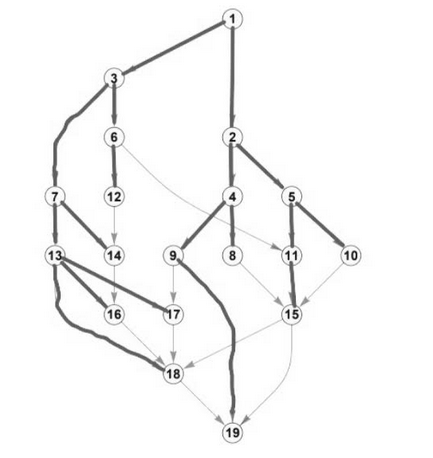

Name: Elokusa Zondi
Module: IFS325
Task: Information Theory Exercises
The shortest route from node 1 to node 18 is the path 1 → 3 → 7 → 13 → 18. This path has 4 steps.
The code is found by checking if the destination node at each step is odd (0) or even (1):
The shortest way to get to node 15 takes 4 steps. From there, it's one more step to node 19. This means the shortest paths to 19 that go through 15 are 5 steps long. There are four such paths:
There are four possible paths from node 1 to node 15. All of them are 4 steps long.
No, 010001 is not the longest path to 18. It's not a valid path at all because decoding 01000 leads to node 19 (1 → 3 → 6 → 11 → 15 → 19), which has no outgoing paths for the final digit 1.
A 5-digit code means a path with 5 steps. To end at node 19, the path must first arrive at either node 15 or node 18 in 4 steps.
The map below highlights all the edges that are part of a shortest path from node 1 to any other node. If there were multiple shortest paths to the same point (like to node 15), all of them are included.
To encode the decisions at each point, you can use the trinary digits {0, 1, 2} to represent the three possible routes. Since there are three equally likely paths at each fork (left, middle, right), a natural mapping would be:
A complete path from the root (point 1) to any endpoint can thus be represented by a unique sequence of these three digits.
In this context, j represents the total number of endpoints in the tree. We can see that after the first level of forks there are 3 nodes, after the second there are 3×3=9 nodes, and at the end (after the third level of forks), there are 9×3=27 endpoints.
Let's choose a path that starts by going from point 1 to 3 and then continues to an endpoint. From point 3, we'll take the right path, and from the subsequent point, we'll take the middle path.
The number of endpoints in this type of tree is calculated by raising the branching factor (3) to the power of the number of levels of forks.
When throwing two 7-sided dice, the possible sums range from:
Total possible outcomes: 7 × 7 = 49
| Sum | Ways to Achieve | Frequency |
|---|---|---|
| 2 | (1,1) | 1/49 |
| 3 | (1,2), (2,1) | 2/49 |
| 4 | (1,3), (2,2), (3,1) | 3/49 |
| 5 | (1,4), (2,3), (3,2), (4,1) | 4/49 |
| 6 | (1,5), (2,4), (3,3), (4,2), (5,1) | 5/49 |
| 7 | (1,6), (2,5), (3,4), (4,3), (5,2), (6,1) | 6/49 |
| 8 | (1,7), (2,6), (3,5), (4,4), (5,3), (6,2), (7,1) | 7/49 |
| 9 | (2,7), (3,6), (4,5), (5,4), (6,3), (7,2) | 6/49 |
| 10 | (3,7), (4,6), (5,5), (6,4), (7,3) | 5/49 |
| 11 | (4,7), (5,6), (6,5), (7,4) | 4/49 |
| 12 | (5,7), (6,6), (7,5) | 3/49 |
| 13 | (6,7), (7,6) | 2/49 |
| 14 | (7,7) | 1/49 |
Let X be the sum of the two dice. Define random variable Y as:
Note: When X = 20 (impossible with 7-sided dice), it would be divisible by both 4 and 5. The problem statement suggests precedence should be given to divisibility by 5, so such cases would return 2.
To digitally encode the outcomes, we convert their assigned decimal values into fixed-length binary numbers. Since the largest decimal value is 11, we need at least 4 bits to represent it (2³=8, 2⁴=16). We will use 4-bit binary codes for consistency.
| Outcome Symbol | Decimal Value | 4-Bit Binary Code |
|---|---|---|
| z | 0 | 0000 |
| n | 10 | 1010 |
| p | 11 | 1011 |
Using the lookup table above, we can encode the message sequence {p, p, n, z, n, p, z} by substituting each symbol with its corresponding 4-bit binary code.
| Symbol | Frequency | Probability |
|---|---|---|
| B (Blue) | 11 | 11/16 = 68.75% |
| W (White) | 4 | 4/16 = 25.00% |
| K (Black) | 1 | 1/16 = 6.25% |
| Symbol | Frequency | Binary Code |
|---|---|---|
| B (Blue) | 11 | 1 |
| W (White) | 4 | 01 |
| K (Black) | 1 | 00 |
| Emoji | Frequency (%) |
|---|---|
| 😂 | 33.561 |
| 😍 | 22.374 |
| 😆 | 14.238 |
| 😊 | 10.848 |
| 😉 | 6.78 |
| 😜 | 6.441 |
| 😻 | 2.373 |
| 😳 | 1.356 |
| 😱 | 1.017 |
| 🙄 | 0.678 |
| 🙆 | 0.339 |
Using Huffman-style encoding based on frequency (most frequent gets shortest codes):
| Emoji | Frequency (%) | Binary Code |
|---|---|---|
| 😂 | 33.561 | 00 |
| 😍 | 22.374 | 01 |
| 😆 | 14.238 | 10 |
| 😊 | 10.848 | 110 |
| 😉 | 6.78 | 1110 |
| 😜 | 6.441 | 1111 |
| 😻 | 2.373 | 00000 |
| 😳 | 1.356 | 00001 |
| 😱 | 1.017 | 00010 |
| 🙄 | 0.678 | 00011 |
| 🙆 | 0.339 | 00100 |
Converting percentages to probabilities:
| Emoji | Probability p(x) |
|---|---|
| 😂 | 0.33561 |
| 😍 | 0.22374 |
| 😆 | 0.14238 |
| 😊 | 0.10848 |
| 😉 | 0.06780 |
| 😜 | 0.06441 |
| 😻 | 0.02373 |
| 😳 | 0.01356 |
| 😱 | 0.01017 |
| 🙄 | 0.00678 |
| 🙆 | 0.00339 |
Surprise is calculated as: I(x) = -log₂(p(x)) bits
| Emoji | Probability p(x) | Surprise I(x) (bits) |
|---|---|---|
| 😂 | 0.33561 | 1.575 |
| 😍 | 0.22374 | 2.159 |
| 😆 | 0.14238 | 2.814 |
| 😊 | 0.10848 | 3.205 |
| 😉 | 0.06780 | 3.882 |
| 😜 | 0.06441 | 3.956 |
| 😻 | 0.02373 | 5.398 |
| 😳 | 0.01356 | 6.204 |
| 😱 | 0.01017 | 6.622 |
| 🙄 | 0.00678 | 7.208 |
| 🙆 | 0.00339 | 8.208 |
| Sum | Probability |
|---|---|
| 2 | 1/36 |
| 3 | 1/18 |
| 4 | 1/12 |
| 5 | 1/9 |
| 6 | 5/36 |
| 7 | 1/6 |
| 8 | 5/36 |
| 9 | 1/9 |
| 10 | 1/12 |
| 11 | 1/18 |
| 12 | 1/36 |
Rolls greater than 9: {10, 11, 12}
Given probabilities:
Entropy Formula: H(X) = -Σ p(x) × log₂(p(x))
From Problem 3, we found:
Information Theory Exercises - Complete Solutions
Elokusa Zondi